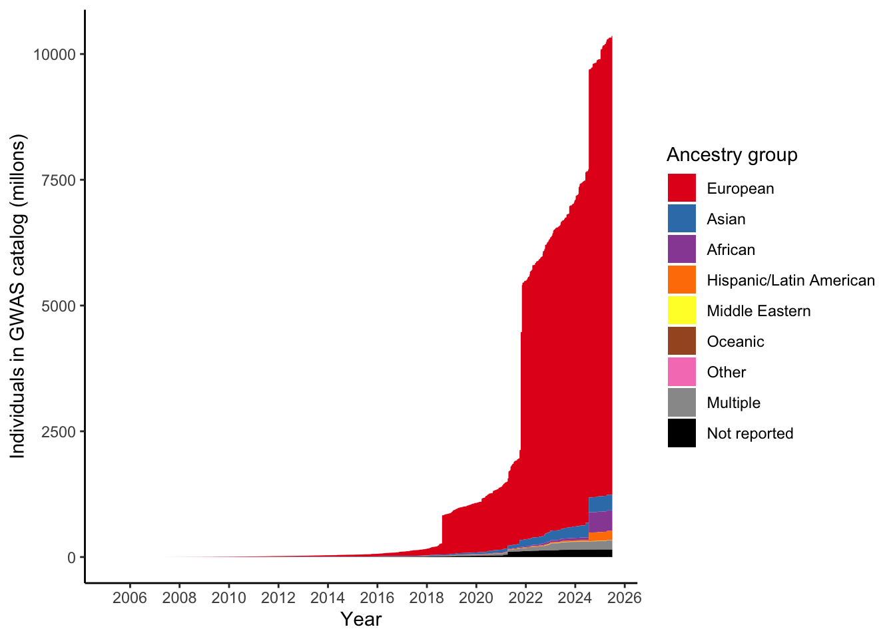

Replicate observed ancestry biases figures in GWAS dataset
Last updated: 2025-07-30
Checks: 7 0
Knit directory:
genomics_ancest_disease_dispar/
This reproducible R Markdown analysis was created with workflowr (version 1.7.1). The Checks tab describes the reproducibility checks that were applied when the results were created. The Past versions tab lists the development history.
Great! Since the R Markdown file has been committed to the Git repository, you know the exact version of the code that produced these results.
Great job! The global environment was empty. Objects defined in the global environment can affect the analysis in your R Markdown file in unknown ways. For reproduciblity it’s best to always run the code in an empty environment.
The command set.seed(20220216) was run prior to running
the code in the R Markdown file. Setting a seed ensures that any results
that rely on randomness, e.g. subsampling or permutations, are
reproducible.
Great job! Recording the operating system, R version, and package versions is critical for reproducibility.
Nice! There were no cached chunks for this analysis, so you can be confident that you successfully produced the results during this run.
Great job! Using relative paths to the files within your workflowr project makes it easier to run your code on other machines.
Great! You are using Git for version control. Tracking code development and connecting the code version to the results is critical for reproducibility.
The results in this page were generated with repository version 10a35cc. See the Past versions tab to see a history of the changes made to the R Markdown and HTML files.
Note that you need to be careful to ensure that all relevant files for
the analysis have been committed to Git prior to generating the results
(you can use wflow_publish or
wflow_git_commit). workflowr only checks the R Markdown
file, but you know if there are other scripts or data files that it
depends on. Below is the status of the Git repository when the results
were generated:
Ignored files:
Ignored: .Rproj.user/
Ignored: data/cdc/
Ignored: data/gwas_catalog/
Untracked files:
Untracked: renv/
Unstaged changes:
Modified: .Rprofile
Modified: README.md
Modified: analysis/_site.yml
Deleted: analysis/about.Rmd
Modified: analysis/disease_inves_by_ancest.Rmd
Deleted: analysis/license.Rmd
Note that any generated files, e.g. HTML, png, CSS, etc., are not included in this status report because it is ok for generated content to have uncommitted changes.
These are the previous versions of the repository in which changes were
made to the R Markdown
(analysis/replication_ancestry_bias.Rmd) and HTML
(docs/replication_ancestry_bias.html) files. If you’ve
configured a remote Git repository (see ?wflow_git_remote),
click on the hyperlinks in the table below to view the files as they
were in that past version.
| File | Version | Author | Date | Message |
|---|---|---|---|---|
| Rmd | 10a35cc | IJBeasley | 2025-07-30 | Updating replication of ancestry biases in gwas |
Load GWAS catalog data
library(dplyr)
library(ggplot2)
gwas_study_info = data.table::fread("data/gwas_catalog/gwas-catalog-v1.0.3-studies-r2022-02-02.tsv",
sep = "\t",
quote = "")
gwas_ancest_info = data.table::fread("./data/gwas_catalog/gwas_catalog-ancestry_r2022-02-02.tsv",
sep = "\t",
quote = "")
gwas_study_info = gwas_study_info |>
dplyr::rename_all(~gsub(" ", "_", .x))
gwas_ancest_info = gwas_ancest_info |>
dplyr::rename_all(~gsub(" ", "_", .x))
# Set up custom theme for ggplots
custom_theme <-
list(
theme_bw() +
theme(
panel.border = element_blank(),
axis.line = element_line(),
text = element_text(size = 16),
legend.position = "bottom",
strip.background = element_blank(),
axis.text.x = element_text(angle = 90, hjust = 1, vjust = 0.5)
)
)Plot figure Martin et al. 2019 like
For all ancestries
# code adapted from https://github.com/armartin/prs_disparities/blob/master/gwas_disparities_time.R
# https://github.com/armartin/prs_disparities/blob/master/gwas_sfs_pop.R
# gwas cat
# http://bioconductor.org/packages/release/bioc/html/gwascat.html
# following steps from https://static-content.springer.com/esm/art%3A10.1038%2Fs41588-019-0379-x/MediaObjects/41588_2019_379_MOESM1_ESM.pdf
# Some number of individuals are missing
gwas_ancest_info |> dplyr::filter(is.na(NUMBER_OF_INDIVDUALS) | NUMBER_OF_INDIVDUALS == 0) |> nrow()[1] 35gwas_ancest_info |> dplyr::filter(is.na(NUMBER_OF_INDIVDUALS) | NUMBER_OF_INDIVDUALS == 0) |> head() STUDY_ACCESSION PUBMEDID FIRST_AUTHOR DATE
<char> <int> <char> <IDat>
1: GCST002988 26089329 Carty CL 2015-06-18
2: GCST004339 28298293 Hu Y 2017-03-15
3: GCST004338 28298293 Hu Y 2017-03-15
4: GCST004585 28630421 Li D 2017-06-19
5: GCST002330 24406073 Galanter JM 2014-01-07
6: GCST001788 23263445 Lawrance-Owen AJ 2012-12-22
INITIAL_SAMPLE_DESCRIPTION
<char>
1: up to 1,365 African American cases, up to 13,154 African American controls
2: 3,521 Chinese ancestry individuals, European individuals (see Wu 2013).
3: 3,521 Chinese ancestry individuals, European ancestry individuals (see Wu et al 2013)
4: 692 European ancestry female cases and 3,570 European ancestry female controls
5: 1,893 Latin American cases, 1,881 Latin American controls
6: 979 European ancestry individuals
REPLICATION_SAMPLE_DESCRIPTION STAGE
<char> <char>
1: European ancestry individuals (see Traylor, 2012) replication
2: <NA> initial
3: <NA> initial
4: Cases and controls (see Boraska et al, 2014) replication
5: EVE Asthma Consortium, see Torgerson et al., 2011 replication
6: (see Medland, 2010) replication
NUMBER_OF_INDIVDUALS BROAD_ANCESTRAL_CATEGORY COUNTRY_OF_ORIGIN
<int> <char> <char>
1: NA European NR
2: NA European NR
3: NA European NR
4: NA NR NR
5: NA NR, Hispanic or Latin American NR
6: NA NR NR
COUNTRY_OF_RECRUITMENT ADDITONAL_ANCESTRY_DESCRIPTION
<char> <char>
1: Australia, NR
2: NR See Wu J. H., et al. 2013. PMID: 23362303
3: NR See Wu et al 23362303
4: NR
5: NR
6: NR # Filter missing number of individuals
gwas_ancest_info = gwas_ancest_info |>
dplyr::filter(!is.na(NUMBER_OF_INDIVDUALS)) |>
dplyr::filter(NUMBER_OF_INDIVDUALS != 0)
# calculate cumulative number of individuals
gwas_ancest_info = gwas_ancest_info %>%
dplyr::arrange(DATE) |>
mutate(cum_num = cumsum(as.numeric(NUMBER_OF_INDIVDUALS))
)
# plot cumulative numbers
gwas_ancest_info %>%
# group_by(DATE) %>%
# slice_max(NUMBER_OF_INDIVDUALS) %>%
ggplot(aes(x=DATE,y=cum_num/1e6)) +
# geom_line() +
geom_area() +
scale_x_date(date_labels = '%Y', date_breaks = "2 years") +
custom_theme +
labs(x = "Year",
y = "Individuals in GWAS catalog (millons)")
Group ancestry into broader categories
Dealing with multiple
- Where multiple, and can get ancestry info from initial sample description - do that
# there's some kinda gross things in here (e.g. 'whites', 'Caucasian non-Hispanic')
unique(gwas_ancest_info$ADDITONAL_ANCESTRY_DESCRIPTION)[1:20] [1] "" "Korean"
[3] "Latinos or Africans" "Asian"
[5] "European" "Malawian, Ugandan"
[7] "Black African, Ugandan" "Italian"
[9] "Japanese" "Han Chinese"
[11] "Polish" "Northern European"
[13] "British, Irish" "Erasmus Rucphen"
[15] "Han Chinese, Indian, Malay" "Orcadian, Erasmus Rucphen"
[17] "Dutch, European American" "European and European American"
[19] "mixed European and Asian ancestry" "Chinese, Japanese" # find studies where people fall into different ancestry categories
gwas_ancest_info_multiple = gwas_ancest_info |>
filter(grepl(",", BROAD_ANCESTRAL_CATEGORY)) |>
dplyr::filter(!BROAD_ANCESTRAL_CATEGORY %in%
c("African unspecified, Sub-Saharan African",
"Sub-Saharan African, African unspecified",
'African American or Afro-Caribbean, African unspecified',
'Greater Middle Eastern (Middle Eastern, North African or Persian)',
'Sub-Saharan African, African American or Afro-Caribbean')
)
# let's see if initial sample description match number of individuals
gwas_ancest_info_multiple = gwas_ancest_info_multiple |>
dplyr::select(PUBMEDID, DATE, STAGE,
BROAD_ANCESTRAL_CATEGORY,
NUMBER_OF_INDIVDUALS,
INITIAL_SAMPLE_DESCRIPTION) |>
dplyr::distinct() |>
mutate(
extracted_numbers = stringr::str_extract_all(INITIAL_SAMPLE_DESCRIPTION, "\\d{1,3}(?:,\\d{3})*|\\d+"),
extracted_numbers = lapply(extracted_numbers, function(x) as.integer(gsub(",", "", x))), # remove commas, convert to integers
extracted_sum = sapply(extracted_numbers, sum),
matches_reported_total = extracted_sum == NUMBER_OF_INDIVDUALS,
diff_inital_sample_n_individ = extracted_sum - NUMBER_OF_INDIVDUALS
)
# total number of individuals in studies with multiple ancestries
total_multiple = sum(gwas_ancest_info_multiple$NUMBER_OF_INDIVDUALS)
# proportion individuals in these studies of total number multiple ancestry
gwas_ancest_info_multiple = gwas_ancest_info_multiple |>
dplyr::mutate(prop_total_multiple = NUMBER_OF_INDIVDUALS / total_multiple)
gwas_extracted_pairs = gwas_ancest_info_multiple |>
dplyr::filter(matches_reported_total == T) |>
dplyr::rowwise() |>
dplyr::filter(length(extracted_numbers) > 1) |>
dplyr::ungroup()
gwas_extracted_pairs =
gwas_extracted_pairs |>
dplyr::mutate(
# Extract number–label patterns: captures digits followed by 1–10 words (tunable)
number_label_matches = stringr::str_extract_all(
INITIAL_SAMPLE_DESCRIPTION,
"\\b\\d{1,3}(?:,\\d{3})*\\b(?:\\s+\\w+){1,10}"
)
) |>
dplyr::select(PUBMEDID,
number_label_matches,
BROAD_ANCESTRAL_CATEGORY,
INITIAL_SAMPLE_DESCRIPTION) |>
# Unnest to one pair per row
tidyr::unnest_longer(number_label_matches) |>
# Clean and split number from label
dplyr::mutate(
number = stringr::str_extract(number_label_matches, "^\\d{1,3}(?:,\\d{3})*"),
number = as.integer(gsub(",", "", number)),
label = stringr::str_trim(stringr::str_remove(number_label_matches, "^\\d{1,3}(?:,\\d{3})*"))
)
gwas_extracted_pairs |>
dplyr::filter(BROAD_ANCESTRAL_CATEGORY %in% c("NR, European",
"European, NR",
"European, Other"))# A tibble: 154 × 6
PUBMEDID number_label_matches BROAD_ANCESTRAL_CATE…¹ INITIAL_SAMPLE_DESCR…²
<int> <chr> <chr> <chr>
1 18385738 1,926 European ance o… European, Other 1,926 European ance o…
2 18385738 2,522 European and ot… European, Other 1,926 European ance o…
3 19451621 1,821 cases European, Other 1,821 cases, 2,258 co…
4 19451621 2,258 controls European, Other 1,821 cases, 2,258 co…
5 20351715 4,387 European and un… European, NR 4,387 European and un…
6 20351715 6,209 European and un… European, NR 4,387 European and un…
7 20860503 10,365 cases European, Other 10,365 cases, 16,110 …
8 20860503 16,110 controls European, Other 10,365 cases, 16,110 …
9 21738484 1,190 European and un… NR, European 1,190 European and un…
10 21738484 401 European and unkn… NR, European 1,190 European and un…
# ℹ 144 more rows
# ℹ abbreviated names: ¹BROAD_ANCESTRAL_CATEGORY, ²INITIAL_SAMPLE_DESCRIPTION
# ℹ 2 more variables: number <int>, label <chr>gwas_extracted_pairs |>
dplyr::filter(!BROAD_ANCESTRAL_CATEGORY %in% c("NR, European",
"European, NR",
"European, Other"))# A tibble: 142 × 6
PUBMEDID number_label_matches BROAD_ANCESTRAL_CATE…¹ INITIAL_SAMPLE_DESCR…²
<int> <chr> <chr> <chr>
1 19724244 90 Hispanic and Europ… European, Hispanic or… 90 Hispanic and Europ…
2 19724244 90 Hispanic and Europ… European, Hispanic or… 90 Hispanic and Europ…
3 20460622 973 incident AD cases European, Hispanic or… 973 incident AD cases…
4 20460622 2,033 prevalent AD ca… European, Hispanic or… 973 incident AD cases…
5 20460622 22,604 controls of E… European, Hispanic or… 973 incident AD cases…
6 23021708 132 African American African American or A… 132 African American,…
7 23021708 103 African American African American or A… 132 African American,…
8 23719583 79 European European, Hispanic or… 79 European, African,…
9 23719583 241 European European, Hispanic or… 79 European, African,…
10 23838604 175 European African American or A… 175 European, African…
# ℹ 132 more rows
# ℹ abbreviated names: ¹BROAD_ANCESTRAL_CATEGORY, ²INITIAL_SAMPLE_DESCRIPTION
# ℹ 2 more variables: number <int>, label <chr>gwas_extracted_pairs |>
dplyr::filter(!BROAD_ANCESTRAL_CATEGORY %in% c("NR, European",
"European, NR",
"European, Other")) |> dplyr::pull(label) |> unique() [1] "Hispanic and European ancestry cases"
[2] "Hispanic and European ancestry controls"
[3] "incident AD cases"
[4] "prevalent AD cases"
[5] "controls of European and Hispanic ancestry"
[6] "African American"
[7] "European"
[8] "bipolar disorder cases"
[9] "pre"
[10] "term birth neonates"
[11] "term delivery mothers"
[12] "obese individuals"
[13] "non"
[14] "osteonecrosis cases"
[15] "treated controls"
[16] "Native American ancestry"
[17] "cases with pancreatitis"
[18] "cases without pancreatitis"
[19] "cases"
[20] "controls"
[21] "children"
[22] "mothers and 237 fathers"
[23] "African American or European ancestry female individuals with single fibroid"
[24] "African American or European ancestry female individuals with multiple fibroids"
[25] "Han Chinese and unknown ancestry alcohol drinkers"
[26] "Han Chinese and unknown ancestry non"
[27] "preterm birth infant cases"
[28] "preterm birth infant controls"
[29] "Asian"
[30] "mothers"
[31] "fathers"
[32] "Asian ancestry cases"
[33] "Asian ancestry controls"
[34] "Chinese or European ancestry cases"
[35] "Chinese or European ancestry controls"
[36] "Hispanic"
[37] "African American individuals"
[38] "East Asian ancestry individuals"
[39] "European ancestry individuals"
[40] "Hispanic individuals"
[41] "South Asian ancestry individuals"
[42] "Sub"
[43] "European ancestry"
[44] "East Asian ancestry female cases"
[45] "East Asian ancestry female controls"
[46] "European ancestry European"
[47] "Japanese" gwas_extracted_pairs |>
dplyr::filter(!BROAD_ANCESTRAL_CATEGORY %in% c("NR, European",
"European, NR",
"European, Other")) |>
dplyr::select(PUBMEDID,
BROAD_ANCESTRAL_CATEGORY,
label,
number) |>
dplyr::mutate(label_v2 = case_when(
label %in% c("European ancestry",
"European ancestry individuals",
"European") ~ "European",
label %in% c("Hispanic",
"Hispanic ancestry",
"Hispanic individuals") ~ "Hispanic/Latino",
label %in% c('East Asian ancestry female cases',
'East Asian ancestry female controls',
'East Asian ancestry individuals',
'Japanese') ~ "East Asian",
label %in% c('South Asian ancestry individuals') ~ "South Asian",
label %in% c('African American',
"African American individuals") ~ 'African',
label %in% c('Asian',
'Asian ancestry cases',
'Asian ancestry controls') ~ 'Asian unspecified',
label %in% c('Native American ancestry') ~ "Other",
TRUE~BROAD_ANCESTRAL_CATEGORY
)
)# A tibble: 142 × 5
PUBMEDID BROAD_ANCESTRAL_CATEGORY label number label_v2
<int> <chr> <chr> <int> <chr>
1 19724244 European, Hispanic or Latin American Hisp… 90 Europea…
2 19724244 European, Hispanic or Latin American Hisp… 90 Europea…
3 20460622 European, Hispanic or Latin American inci… 973 Europea…
4 20460622 European, Hispanic or Latin American prev… 2033 Europea…
5 20460622 European, Hispanic or Latin American cont… 22604 Europea…
6 23021708 African American or Afro-Caribbean, South Asi… Afri… 132 African
7 23021708 African American or Afro-Caribbean, South Asi… Afri… 103 African
8 23719583 European, Hispanic or Latin American, African… Euro… 79 European
9 23719583 European, Hispanic or Latin American, African… Euro… 241 European
10 23838604 African American or Afro-Caribbean, European,… Euro… 175 European
# ℹ 132 more rowsgwas_ancest_info_multiple |>
dplyr::group_by(matches_reported_total, STAGE) |>
dplyr::summarise(n = n()) `summarise()` has grouped output by 'matches_reported_total'. You can override
using the `.groups` argument.# A tibble: 4 × 3
# Groups: matches_reported_total [2]
matches_reported_total STAGE n
<lgl> <chr> <int>
1 FALSE initial 249
2 FALSE replication 169
3 TRUE initial 267
4 TRUE replication 1gwas_ancest_info_multiple |>
dplyr::group_by(matches_reported_total, STAGE) |>
dplyr::summarise(median_diff = median(abs(diff_inital_sample_n_individ)),
mean_diff = mean(abs(diff_inital_sample_n_individ)),
min_diff = min(diff_inital_sample_n_individ),
max_diff = max(diff_inital_sample_n_individ)
)`summarise()` has grouped output by 'matches_reported_total'. You can override
using the `.groups` argument.# A tibble: 4 × 6
# Groups: matches_reported_total [2]
matches_reported_total STAGE median_diff mean_diff min_diff max_diff
<lgl> <chr> <int> <dbl> <int> <int>
1 FALSE initial 17803 94252. -187639 1190995
2 FALSE replication 6862 44807. -741609 337502
3 TRUE initial 0 0 0 0
4 TRUE replication 0 0 0 0gwas_ancest_info_multiple |>
dplyr::filter(matches_reported_total == F) |>
ggplot(aes(x = diff_inital_sample_n_individ)) +
geom_histogram() +
theme_bw() +
facet_wrap(~STAGE)`stat_bin()` using `bins = 30`. Pick better value with `binwidth`.
gwas_ancest_info_multiple |>
dplyr::filter(matches_reported_total == F) |>
ggplot(aes(y = diff_inital_sample_n_individ)) +
geom_boxplot() +
theme_bw() +
facet_wrap(~STAGE)
gwas_ancest_info_multiple |>
arrange(desc(NUMBER_OF_INDIVDUALS)) |>
head(
) PUBMEDID DATE STAGE
<int> <IDat> <char>
1: 34548389 2021-09-21 initial
2: 33243845 2020-11-26 replication
3: 34450027 2021-08-24 initial
4: 34450027 2021-08-24 initial
5: 32888493 2020-09-01 initial
6: 32888493 2020-09-01 initial
BROAD_ANCESTRAL_CATEGORY
<char>
1: European, East Asian, South Asian, African American or Afro-Caribbean, Hispanic or Latin American
2: European, NR
3: East Asian, European
4: East Asian, European
5: African American or Afro-Caribbean, African unspecified, European, East Asian, Hispanic or Latin American, South Asian
6: African American or Afro-Caribbean, African unspecified, European, East Asian, Hispanic or Latin American, South Asian
NUMBER_OF_INDIVDUALS
<int>
1: 1159871
2: 959564
3: 890949
4: 890949
5: 746667
6: 746431
INITIAL_SAMPLE_DESCRIPTION
<char>
1: 949,116 European ancestry individuals, 166,997 East Asian ancestry individuals, 21,338 South Asian ancestry individuals, 17,459 African American individuals, 4,961 Hispanic individuals
2: 16,761 Finnish ancestry cases, 201,194 Finnish ancestry controls
3: up to 400,604 European, Japanese ancestry female cases, up to 490,345 European, Japanese ancestry female controls
4: up to 400,604 Japanese, European ancestry male cases, up to 490,345 Japanese, European ancestry male controls
5: 746,667 African American or Afro-Caribbean, African ancestry, European ancestry, East Asian ancestry, Hispanic or Latin American and South Asian ancestry individuals
6: 746,431 African American or Afro-Caribbean, African ancestry, European ancestry, East Asian ancestry, Hispanic or Latin American and South Asian ancestry individuals
extracted_numbers extracted_sum matches_reported_total
<list> <int> <lgcl>
1: 949116,166997, 21338, 17459, 4961 1159871 TRUE
2: 16761,201194 217955 FALSE
3: 400604,490345 890949 TRUE
4: 400604,490345 890949 TRUE
5: 746667 746667 TRUE
6: 746431 746431 TRUE
diff_inital_sample_n_individ prop_total_multiple
<int> <num>
1: 0 0.02556391
2: -741609 0.02114908
3: 0 0.01963679
4: 0 0.01963679
5: 0 0.01645677
6: 0 0.01645157gwas_ancest_info_multiple |>
dplyr::slice_max(NUMBER_OF_INDIVDUALS, n = 100) |>
dplyr::mutate(PUBMEDID = as.factor(PUBMEDID)) |>
dplyr::mutate(PUBMEDID = reorder(PUBMEDID, NUMBER_OF_INDIVDUALS)) |>
ggplot(aes(x = NUMBER_OF_INDIVDUALS, y= PUBMEDID)) +
geom_col() +
theme_bw()
gwas_ancest_info_multiple |>
dplyr::mutate(prop_number_of_individ = NUMBER_OF_INDIVDUALS / total_multiple) |>
dplyr::arrange(desc(NUMBER_OF_INDIVDUALS)) |>
dplyr::mutate(cum_prop_n_of_individ = cumsum(prop_number_of_individ)) |>
dplyr::select(PUBMEDID, cum_prop_n_of_individ, NUMBER_OF_INDIVDUALS) PUBMEDID cum_prop_n_of_individ NUMBER_OF_INDIVDUALS
<int> <num> <int>
1: 34548389 0.02556391 1159871
2: 33243845 0.04671299 959564
3: 34450027 0.06634978 890949
4: 34450027 0.08598657 890949
5: 32888493 0.10244333 746667
---
682: 29315502 0.99999960 10
683: 33589590 0.99999974 6
684: 33589590 0.99999987 6
685: 34680877 0.99999998 5
686: 31299468 1.00000000 1# in total - studies where initial number of individuals = number of individual
# ~ 70%
gwas_ancest_info_multiple |>
dplyr::filter(matches_reported_total == T) |>
dplyr::arrange(desc(NUMBER_OF_INDIVDUALS)) |>
dplyr::mutate(cum_prop_n_of_individ = cumsum(prop_total_multiple)) |>
dplyr::select(PUBMEDID, cum_prop_n_of_individ, NUMBER_OF_INDIVDUALS) |>
tail() PUBMEDID cum_prop_n_of_individ NUMBER_OF_INDIVDUALS
<int> <num> <int>
1: 22391508 0.7030777 100
2: 32066683 0.7030798 95
3: 33669428 0.7030818 90
4: 33831438 0.7030838 90
5: 34025683 0.7030857 87
6: 34025683 0.7030876 86What are the groups?
# code adapted from https://github.com/armartin/prs_disparities/blob/master/gwas_disparities_time.R
group_ancestry_fn = function(study_ancest){
case_when(
# European
study_ancest %in% c('European') ~ 'European',
# African
study_ancest %in% c('Sub-Saharan African, African American or Afro-Caribbean',
'African American or Afro-Caribbean, African unspecified',
'Sub-Saharan African, African unspecified',
'African-American or Afro-Caribbean',
'Sub-Saharan African',
'African American or Afro-Caribbean',
'African unspecified') ~ 'African',
# Asian
study_ancest %in% c('East Asian, Asian unspecified',
'South Asian, East Asian ',
'South Asian, South East Asian',
'South Asian, South East Asian, East Asian',
'South East Asian, East Asian',
'South East Asian, South Asian, East Asian',
'South Asian',
'South East Asian',
'Central Asian',
'East Asian',
'Asian unspecified') ~'Asian',
# Middle eastern
study_ancest == 'Greater Middle Eastern (Middle Eastern, North African or Persian)' ~'Middle Eastern',
# Oceanic
study_ancest %in% c('Aboriginal Australian',
'Oceanian') ~'Oceanic',
# Hispanic/Latin American
study_ancest %in% "Hispanic or Latin American" ~'Hispanic/Latin American',
# Other
study_ancest %in% c('Other',
'Other, NR',
'NR, Other',
'Other admixed ancestry',
'Native American') ~ "Other",
# Not reported
study_ancest %in% "NR" ~ "Not reported",
# Multiple
grepl(", ", study_ancest) ~ 'Multiple',
TRUE~study_ancest
)
}
grouped_ancest = vector()
for(study_ancest in unique(gwas_ancest_info$BROAD_ANCESTRAL_CATEGORY)){
grouped_ancest[study_ancest] = group_ancestry_fn(study_ancest)
}
grouped_ancest_map = data.frame(ancestry_group = grouped_ancest,
BROAD_ANCESTRAL_CATEGORY = unique(gwas_ancest_info$BROAD_ANCESTRAL_CATEGORY)
)
print(head(grouped_ancest_map)) ancestry_group
European European
Other Other
Asian unspecified Asian
African American or Afro-Caribbean African
NR Not reported
South East Asian Asian
BROAD_ANCESTRAL_CATEGORY
European European
Other Other
Asian unspecified Asian unspecified
African American or Afro-Caribbean African American or Afro-Caribbean
NR NR
South East Asian South East AsianApply this ancestry mapping
gwas_ancest_info = dplyr::left_join(
gwas_ancest_info,
grouped_ancest_map)Joining with `by = join_by(BROAD_ANCESTRAL_CATEGORY)`gwas_ancest_info %>%
group_by(ancestry_group) %>%
summarise(n = sum(NUMBER_OF_INDIVDUALS, na.rm = TRUE))# A tibble: 9 × 2
ancestry_group n
<chr> <dbl>
1 African 13322669
2 Asian 135105215
3 European 4235129752
4 Hispanic/Latin American 10840275
5 Middle Eastern 348192
6 Multiple 55154361
7 Not reported 110448036
8 Oceanic 116432
9 Other 404165# colours from RColorBrewer::brewer.pal(n = 9, "Set1")
ancestry_colors <- c(
"African" = "#984EA3",
"European" = "#E41A1C",
"Asian" = "#377EB8", #east asian
# "South Asian" = "#4DAF4A",
"Hispanic/Latin American" = "#FF7F00",
"Middle Eastern" = "#FFFF33",
"Oceanic" = "#A65628",
"Other" = "#F781BF",
"Multiple" = "#999999",
"Not reported" = "black"
)
# Define the desired stacking order
ancestry_levels <- c(
"European",
# "East Asian",
# "South Asian",
"Asian",
"African",
"Hispanic/Latin American",
"Middle Eastern",
"Oceanic",
"Other",
"Multiple",
"Not reported"
)
gwas_ancest_info %>%
group_by(ancestry_group) %>%
mutate(ancestry_group = factor(ancestry_group, levels = ancestry_levels)) %>%
mutate(ancest_cumsum = cumsum(as.numeric(NUMBER_OF_INDIVDUALS))) %>%
ggplot(aes(x=DATE, y=ancest_cumsum/(10^6), fill = ancestry_group)) +
#geom_area() +
geom_area(position = 'stack') +
scale_x_date(date_labels = '%Y', date_breaks = "2 years") +
theme_classic() +
labs(x = "Year", y = "Individuals in GWAS catalog (millons)") +
scale_fill_manual(values = ancestry_colors, name='Ancestry group') 
# scale_fill_brewer(palette = "Set1")inner_join(
gwas_study_info %>% select(STUDY_ACCESSION,
`DISEASE/TRAIT`,
MAPPED_TRAIT),
gwas_ancest_info %>% select(STUDY_ACCESSION,
NUMBER_OF_INDIVDUALS,
BROAD_ANCESTRAL_CATEGORY,
ancestry_group)) %>%
group_by(BROAD_ANCESTRAL_CATEGORY,
`DISEASE/TRAIT`) %>%
summarise(n = sum(NUMBER_OF_INDIVDUALS)) %>%
group_by(BROAD_ANCESTRAL_CATEGORY) %>%
slice_max(n,n = 5)Joining with `by = join_by(STUDY_ACCESSION)`
`summarise()` has grouped output by 'BROAD_ANCESTRAL_CATEGORY'. You can
override using the `.groups` argument.# A tibble: 802 × 3
# Groups: BROAD_ANCESTRAL_CATEGORY [192]
BROAD_ANCESTRAL_CATEGORY `DISEASE/TRAIT` n
<chr> <chr> <int>
1 Aboriginal Australian Urinary albumi… 746
2 Aboriginal Australian Otitis media 391
3 Aboriginal Australian Type 2 diabetes 391
4 Aboriginal Australian Body mass index 361
5 African American or Afro-Caribbean Cataracts 262576
6 African American or Afro-Caribbean Body mass index 228346
7 African American or Afro-Caribbean Type 2 diabetes 202731
8 African American or Afro-Caribbean Diastolic bloo… 200474
9 African American or Afro-Caribbean Systolic blood… 200474
10 African American or Afro-Caribbean, African unspecifi… Type 2 diabetes 287510
# ℹ 792 more rows
sessionInfo()R version 4.3.1 (2023-06-16 ucrt)
Platform: x86_64-w64-mingw32/x64 (64-bit)
Running under: Windows 11 x64 (build 26100)
Matrix products: default
locale:
[1] LC_COLLATE=English_Australia.utf8 LC_CTYPE=English_Australia.utf8
[3] LC_MONETARY=English_Australia.utf8 LC_NUMERIC=C
[5] LC_TIME=English_Australia.utf8
time zone: America/Los_Angeles
tzcode source: internal
attached base packages:
[1] stats graphics grDevices datasets utils methods base
other attached packages:
[1] ggplot2_3.5.2 dplyr_1.1.4 workflowr_1.7.1
loaded via a namespace (and not attached):
[1] gtable_0.3.6 jsonlite_2.0.0 compiler_4.3.1 renv_1.0.3
[5] promises_1.3.3 tidyselect_1.2.1 Rcpp_1.0.14 stringr_1.5.1
[9] git2r_0.36.2 tidyr_1.3.1 callr_3.7.6 later_1.4.2
[13] jquerylib_0.1.4 scales_1.4.0 yaml_2.3.10 fastmap_1.2.0
[17] R6_2.6.1 labeling_0.4.3 generics_0.1.4 knitr_1.50
[21] tibble_3.2.1 rprojroot_2.1.0 RColorBrewer_1.1-3 bslib_0.9.0
[25] pillar_1.10.2 rlang_1.1.6 utf8_1.2.5 cachem_1.1.0
[29] stringi_1.8.7 httpuv_1.6.13 xfun_0.52 getPass_0.2-4
[33] fs_1.6.6 sass_0.4.10 cli_3.6.5 withr_3.0.2
[37] magrittr_2.0.3 ps_1.9.1 grid_4.3.1 digest_0.6.37
[41] processx_3.8.6 rstudioapi_0.15.0 lifecycle_1.0.4 vctrs_0.6.5
[45] data.table_1.17.4 evaluate_1.0.3 glue_1.8.0 farver_2.1.2
[49] whisker_0.4.1 purrr_1.0.4 rmarkdown_2.29 httr_1.4.7
[53] tools_4.3.1 pkgconfig_2.0.3 htmltools_0.5.8.1